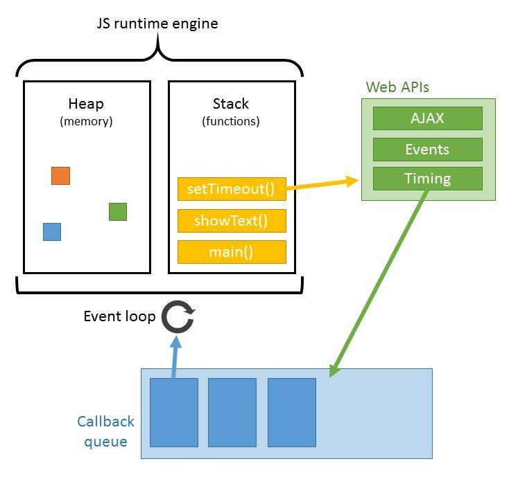

在讲 Event Loop （事件循环）之前，我们先来了解点东西。
进程与线程
进程是操作系统分配资源的基本单位，而线程是可以被处理器独立调度与分配的最小单元，线程自己基本上不拥有资源，只拥有一点在运行时必不可少的资源（如程序计数器、一组寄存器和栈），但它可以与同属一个进程的其他线程共享进程拥有的全部资源。举个例子，浏览器就是一个进程，但其用户界面，引擎，渲染引擎都是浏览器进程里的线程。
浏览器渲染引擎
渲染引擎内部是多线程的，内部包含 ui 线程和 js 线程
js 线程 ui 线程 这两个线程互斥的，目的就是为了保证不产生冲突。
ui 线程会把更改的放到队列中，当 js 线程空闲下来的时候，ui 线程在继续渲染
webworker 多线程
它和 js 主线程不是平级的，主线程可以控制 webworker，但是 webworker不能操作 DOM，不能获取 document，window
其它线程
浏览器事件触发线程(用来控制事件循环,存放 setTimeout、浏览器事件、ajax 的回调函数)
定时触发器线程(setTimeout 定时器所在线程)
异步 HTTP 请求线程(ajax 请求线程)
js 单线程
作为浏览器脚本语言，JavaScript的主要用途是与用户互动，以及操作DOM。假如不是单线程的话，在一个线程当我们在给某个DOM节点增加内容的时候，另一个线程正在删除这个DOM节点的内容，页面会很混乱，这里所谓的单线程指的是主线程是单线程的,所以在 Node 中主线程依旧是单线程的。
同步和异步：
虽然javascript是单线程，但是javascript中有同步和异步的概念，解决了js阻塞的问题。
同步：
如果在一个函数返回的时候，调用者就能够得到预期结果(即拿到了预期的返回值或者看到了预期的效果)，那么这个函数就是同步的。
用代码解释一下：
1 | console.log('Hello'); |
如果在函数返回时，就看到了预期的效果：在控制台打印了Hello
异步：
如果在函数返回的时候，调用者还不能够得到预期结果，而是需要在将来通过一定的手段得到，那么这个函数就是异步的。
代码解释：
1 | fs.readFile('test.txt', 'utf8', function(err, data) { |
在上面的代码中，我们希望通过fs.readFile函数读取文件foo.txt中的内容，并打印出来。但是在fs.readFile函数返回时，我们期望的结果并不会发生，而是要等到文件全部读取完成之后。如果文件很大的话可能要很长时间。
小总结：
- 同步方法调用一旦开始，调用者必须等到方法调用返回后，才能继续后续的行为。
- 异步方法调用更像一个消息传递，一旦开始，方法调用就会立即返回，调用者就可以继续后续的操作。而，异步方法通常会在另外一个线程中，“真实”地执行着。整个过程，不会阻碍调用者的工作。
javascript就可以进行同步任务和异步任务。把读文件这种操作，ajax请求这些需要耗时的任务放到任务队列中，我还是能够一步步的继续下面的任务。所以啊，javascript还是可以很6。那么异步任务里面只是放要进行异步操作的任务吗，里面会发生啥呢？
任务队列：
上面说过了javascript里面的任务有两种，同步任务和异步任务。
同步任务是指：在主线程上排队执行的任务，只有前一个任务执行完毕，才能执行后一个任务。
异步任务指的是，不进入主线程、而进入”任务队列”的任务，只有”任务队列”通知主线程，某个异步任务可以执行了，该任务才会进入主线程执行。
先看个小栗子吧：
1 | console.log("a"); |
js中代码从上往下执行，执行第一行代码的时候控制台输出a，执行到第二行代码的时候遇到了setTimeout函数，因为setTimeout函数是个异步函数，所以，浏览器会记住这个事件，添加到时间表中，之后把这个事件的回调函数入栈到任务队列中。而此时主线程程序继续往下运行，到了第五行:console.log(“c”)，执行这条，控制台输出c。这时候主线程空了，他会到任务队列里面去查找是否有可以执行的任务，有的话直接拿出来执行，没有的话会一直去询问，等到有可以执行的。
浏览器中的Event Loop

事件循环其实就是入栈出栈的循环。上面例子中说到了setTimeout，那setInterval呢，Promise呢等等等等，有很多异步的函数。但是这些异步任务有分宏任务(macro-task)和微任务(micro-task)：
macro-task包括： setTimeout, setInterval, setImmediate, I/O, UI rendering。
micro-task包括：process.nextTick, Promises, Object.observe, MutationObserver。
每一次Event Loop触发时：
- 执行完主执行线程中的任务。
- 取出micro-task中任务执行直到清空。
- 取出macro-task中一个任务执行。
- 取出micro-task中任务执行直到清空。
- 重复3和4。
其实promise的then和catch才是microtask，本身的内部代码不是。
注意：
- 在浏览器浏览器和node中的执行不一样。
- 任务队列里面是“先入先出”的。
那来个小栗子测试一下你是不是已经完全理解啦：
1 | console.log('global') |
控制台输出：
总结：
这里主要是讲了在浏览器端js事件循环。这篇文章可以帮助更好的理解node和浏览器环境下不同的事件循环：浏览器和Node不同的事件循环（Event Loop）